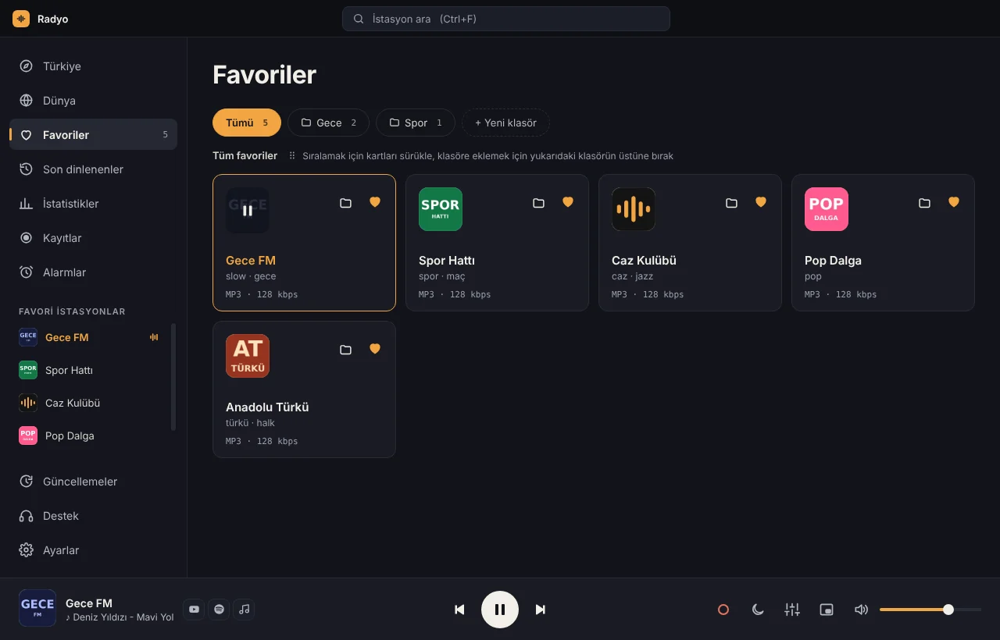

Keşfet
Türe, şehre ve en çok dinlenenlere göre. Bir karta dokun, çalsın.

Türkiye’nin bütün radyoları.
Dünyadan binlercesi.
Çalan şarkının adı ekranda.
Hepsi ücretsiz.
Türe, şehre ve en çok dinlenenlere göre. Bir karta dokun, çalsın.
Bas, Konuşma, Araba gibi hazır ayarlar. Radyo değişince ses birden yükselmez.
Radyolarını klasörlere ayır, sürükleyerek sırala, bilgisayarlar arasında eşitle.
Ne kadar, neyi dinlediğin. Hepsi bilgisayarında hesaplanır, bir yere gönderilmez.



Şarkının adı ekranda; tek tıkla YouTube ya da Spotify’da aç. Son çalanlar da saklanır.
Yayını kaydet, belli saatte otomatik kayıt kur ya da sabahları radyoyla uyan.
Pencereyi kapatınca saatin yanında çalmaya devam eder. Mini oynatıcı ve kısayollar.
Koyu ve açık tema. Windows’un ayarını kendiliğinden izler.

Keşfet’te tek dokunuşla.
Yakında
OA Radyo Android’e geliyor. Çıktığında sana haber verelim.
Abonelik yok, gizli ücret yok.
Araya biz reklam sokmayız.
Hesap gerekmez. İndir, aç, dinle.
Radyo-Setup.exe dosyasını yukarıdaki düğmeyle indir.
Dosyayı aç. Windows uyarı verirse “Ek bilgi”, sonra “Yine de çalıştır”.
OA Radyo açılır, istasyonlar kendiliğinden iner. Bir karta tıkla.
Hayır. OA Radyo tamamen ücretsiz ve reklamsız. Radyoların kendi yayınlarındaki reklamlar yayının parçası.
Uygulama henüz dijital olarak imzalı olmadığı için Windows ilk açılışta “bilgisayarınız korundu” diyebilir. “Ek bilgi”ye, sonra “Yine de çalıştır”a basman yeterli.
Gönüllülerin oluşturduğu ücretsiz Radio Browser veritabanından.
Uygulamada “Yayın adresiyle ekle”yi kullan ya da destek@oalabs.dev’e yaz, listeye ekleyelim.
Yeni sürüm çıkınca uygulama kendisi haber verir; “Yeniden başlat ve güncelle”ye basman yeterli.